model_diversity <- cpglm(pm2.5_dailymean ~ month + simpson_diversity)Analysis
Here we provide a detailed analysis using more sophisticated statistics techniques.
Exposure to small particulate matter (PM2.5) can lead to respiratory issues like asthma, irregular heartbeat, and heart attacks EPA. Recent research has demonstrated that people of color generally have a higher exposure to air pollution than white residents in the U.S. Environmental Health Persepectives.
This section explores trends in EPA air quality metric PM2.5 concentration across monitoring sites along the East Coast U.S. in addition to demographic trends in neighborhoods associated with measured air quality. The ultimate goal was to compare PM2.5 exposure by race throughout 2020.
Air Quality by Season
Daily air quality parameters like particulate matter concentration are highly variable, especially on a regional scale. The air quality data for this project was collected in 2020, throughout the COVID-19 pandemic. Lockdowns and travel restrictions, particularly throughout Spring 2020, heavily impacted car travel and industry, major contributors of atmospheric particulate matter. Trends in particulate matter throughout 2020 were explored in air_qual_trends.R.
The variability of [PM2.5] over time is represented by an average daily value across all sites. A 7-day rolling average has been included to improve illustration of longer-term trends.
On a monthly scale, reductions in [PM2.5] can be seen in all states during the early months of the pandemic (March-May). According to the CDC Museum Timeline, most travel restrictions fell within this window.
To determine the effects of seasonality on particulate matter concentration, a linear mixed model (LMM) was performed. The chosen model allows for variation among neighborhoods (a nested variable within state) and across seasons. An ANOVA confirmed that neighborhood interaction significantly improved model fit.
An estimated marginal means (from library(emmeans)) was used to explore trends in PM2.5 concentrations across neighborhoods, states, and seasons. Most neighborhoods demonstrated lowest [PM2.5] during the spring season, as expected. Trends in seasonality tended to vary among states, but within states, neighborhoods often demonstrated consistent patterns.

Neighborhoods by race
Visually, demographic differences between states and within states at the neighborhood level are apparent. To confirm statistical significance, a Kruskal-Wallis test was performed in demographic_trends.R. Percent population of all races differed significantly between states. However, within states neighborhoods were not significantly different by percent population by race.

Exploring air quality trends by demographics
Initially, we aimed to pursue a Gamma model to predict [PM2.5] at particular times of year based on neighborhood demographic characteristics. The right-skewed distribution and increasing variance with increased mean of PM2.5 concentration fit the assumptions of a Gamma model. However, there were also instances of true zero PM2.5 days, which violates the assumptions of this model type.
Instead, a compound Poisson generalized linear model (CPGLM) was appropriate for this investigation. Two approaches were applied to limit multicollinearity in the data. In each case, variation was controlled by month as well.
1. Simpson Diversity Index
The Simpson Diversity Index is a representation of diveristy usually applied to biodiversity (number of species). However, here it has been applied to racial diversity and gives a broad overview of racial heterogeneity as well as racial distribution (evenness) by neighborhood Gregorius and Gillet, 2008.
Proportion by race including white, black, asian, and other (combined native, pacific, etc.) were used to calculate a Simpson diversity score from 0 (no diversity) to 1 (maximum diversity).
Controlling for variation by month, the diversity model output demonstrates that more racially diverse neighborhoods have significantly less exposure to PM2.5.
This result appears counterintuitive at first. However, the Simpson Diversity Index does not account for the actual density of any one group. This could suggest that spatial distribution of more segregated neighborhoods is missed in this model. To dive deeper into these relationships, a predictive CPGLM using relative percent by race was developed.
2. Relative Percent
This model used percent by race as predictor variables. It is important to note that all results are relative to percent white.
model_relWhite <- cpglm(pm2.5_dailymean ~ month + pct_black + pct_asian +
pct_native + pct_pacific + pct_other_race + pct_two_or_more, data = dataset)Results by Race % Population
- Percent Black:
Estimate ~ +0.00072 increase in PM2.5 exposure for each 1% increase in Black population. This increase seems small but is significant on large spatial scales. This result suggests areas with higher percent Black populations have greater risk of PM2.5 exposure, consistent with previous research on racial disparities with air quality metrics.
- Percent Asian
Estimate ~ +0.00095 shows a similar increase in PM2.5 exposure in areas with higher Asian populations.
- Percent Native American and Percent Pacific Islander
Interestingly, both percent Native American and percent Pacific Islander saw strong negative associations with PM2.5, estimates -0.073 and -0.202, respectively. This could suggest that these populations tend to be grouped in more rural areas or areas with lower industrialization.
- Percent Other Race
There was a small but significant positive association with PM2.5 (estimate +0.0028).
- Percent Two or More Races
This relationship was non-significant (p > 0.05).
Visualizing relationships
The coefficient estimates from both the Simpson Diversity model and the Relative Percent by race model are shown below.
With more time, next steps would be to investigate socioeconomic associations with PM2.5 like median income and poverty levels.
This comes from the file analysis.qmd.